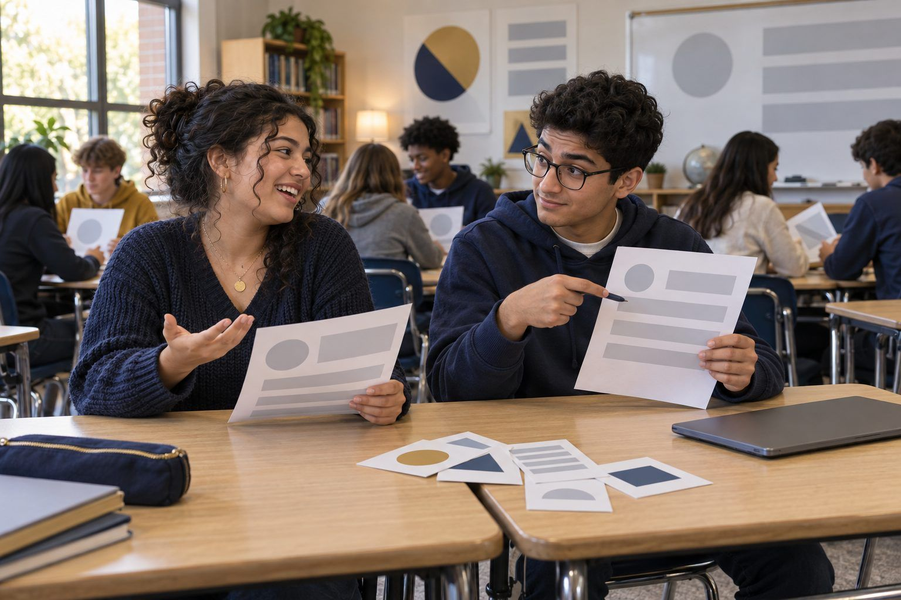

Student learningfor Grades 3–5
Photo Detective
Students investigate described photos that were cropped, edited, or made with AI, and learn two fact-checker moves that work better than staring: Stop, and Find better coverage.

All activities Student learning
Students turn a true present-day tech trend into a plausible future headline and lede, then trade and fact-check each other's work for accuracy and clickbait.
Futures researchers watch for signals: small, real pieces of evidence that something is changing. In this lab, student pairs draw a signal card describing something true about technology today, decide where it could plausibly lead, and write the news story from that future as a journalist would: a headline, a lede, and an evidence line. Then pairs trade and fact-check each other's work. Does the headline match the story? Does it trace back to something real, or is it just possible? Is it news or clickbait? Students finish by proposing one rule or habit their generation should adopt now.
Hook
Uncover two headlines about the same fictional event: "ROBOTS ARE TAKING OVER RIVERSIDE HIGH'S CAFETERIA!!" and "Riverside High Tests a Delivery Robot for Lunch Orders; Students Split on Whether It Helps." Ask for a show of hands: which would you click? Which would you trust? Then ask what is different about the words. Collect the clues: all caps, exclamation points, the vague "taking over," and the second headline's who-what-where.
Facilitator noteStudents usually say they'd click the first and trust the second. That gap is the lesson: the most clickable headline and the most accurate one are often different.
Model
Think aloud with a signal that isn't in the deck: "Some cars can already park themselves." Point to the futures cone. Possible: "By 2030 all cars fly" (nothing today points there). Plausible: "Pecan Creek High Drops Parallel Parking From Its Driver's Ed Test (2034)" (it follows from the real signal). Then write the lede, the first sentence of a news story, answering who, what, when, where, and why. Finally, write the evidence line: "This could happen because today some cars can already park themselves." Say: "A good future headline is fiction that is honest about where it comes from."
Facilitator noteStress that a lede reports; it doesn't hype. And stress the rule: no made-up statistics and no real people or companies. Fictional places only.
Create
Each pair draws a signal card and completes Handout B: restate the signal in their own words, place their idea on the futures cone, then write a headline dated between 2028 and 2040, a lede, an evidence line, and one person who benefits and one who could be left out. Every draft gets labeled FICTION FROM THE FUTURE at the top.
Facilitator noteThe label is a digital citizenship move, not decoration. Ask: "If this got screenshotted and shared without the label, what could go wrong?" A future headline without its label is misinformation.
Practice
Pairs trade drafts with another pair and use Handout C to check the other pair's headline. Does the headline match the lede? Does the evidence line point to something real today? Is it plausible or just possible? Any clickbait cues or invented numbers? Checkers write one specific fix and hand the draft back. Writers revise their headline in the last box on Handout B.
Facilitator noteListen for vague feedback such as "it's good." Push for the checklist language: "Your headline says 'banned everywhere' but your lede says one school. Change the headline."
Apply
Each pair reads its revised headline aloud in one breath. Then each pair proposes one rule or habit people their age should adopt now because of the future they wrote (for example, "Call back on a number you know before acting on a voice message asking for money"). Pairs write their rule on a sticky note and post it on the chart. Everyone gets two dots to vote for the rules they would actually follow.
Facilitator noteOptional, projected: ask an approved AI chatbot to "write a news headline and first sentence from the year 2032" about one signal. Run Handout C on its answer. It often adds confident specifics, such as numbers or named experts, that trace to nothing. That is the invented-statistic problem students just learned to catch.
Reflect
On the back of Handout B, each student answers: "How can you tell when a real headline is written to get clicks rather than to inform you? Name one clue you'll look for this week."
Facilitator noteCollect Handout B and Handout C together. The revision box plus the checker's fix is the evidence of learning.
The whole lab runs on paper: signal cards, the draft sheet, and the fact-check checklist. The trade is a physical swap between pairs, and the rule vote uses sticky dots on chart paper. Skip the AI comparison or describe it: read aloud a sample of a machine-written headline that includes an untraceable number, and have students run the checklist on it.
Give each pair a slide in a shared deck with the Handout B fields; pairs trade by moving to another pair's slide and leaving a comment with their fix, so every revision is visible in the version history. The teacher can project an approved AI chatbot for the comparison in the Apply step; students don't need accounts, and for students under 13 the teacher drives any AI tool. The rule vote can be a quick poll.
Does it need a screen? The projected AI comparison shows students that a machine will produce confident, specific-sounding headlines with numbers that trace to nothing, which is exactly the fabrication the fact-check teaches them to catch. A shared deck's comment and version history also keeps a record of each fix and revision, which a crossed-out paper draft doesn't show as clearly.
What you should be able to see or collect if it worked.
Students write a future news headline, lede, and evidence line, then fact-check a peer's draft for clickbait and invented numbers and revise.
For homework, students find one real headline about technology and run Handout C on it, noting whether the headline matches the article's first paragraph. Next lesson, sort the real headlines into "informs" and "just wants the click" and compare the clues.